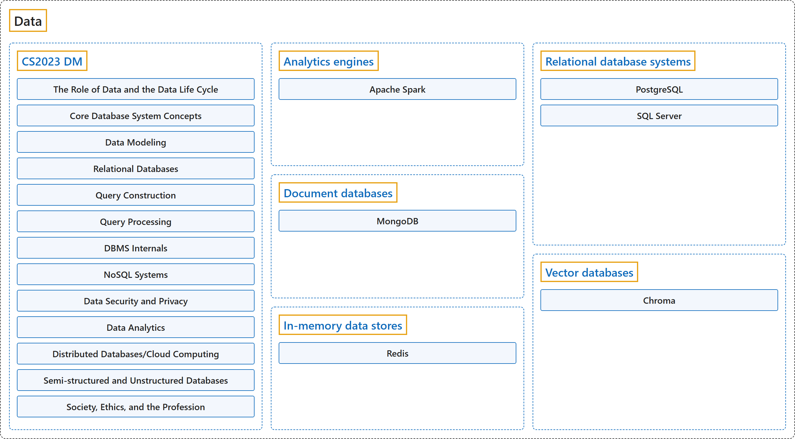

Data
Classification

Glossary
| Term | Definition | 中文翻译 | Source |
|---|---|---|---|
| Data 数据 |
"Information in a specific representation, usually as a sequence of symbols that have meaning." | 信息，以特定的表示形式呈现，通常是一串有意义的符号序列。 | National Institute of Standards and Technology, n.d., "data" entry, definition 1 |
| CS2023 DM CS2023 DM |
"Today's graduates are expected to possess DBMS user (rather than implementor) skills. These primarily include data modeling and query construction; ability to take an unorganized collection of data, organize it using a DBMS, and access/update the collection via queries." | 如今的毕业生应具备DBMS 使用者（而非实现者）的技能。这些技能主要包括数据建模和查询构建；能够把一堆无组织的数据用 DBMS 组织起来，并通过查询访问和更新这些数据。 | Joint Task Force on Computing Curricula, 2024, DM "Preamble" section, para. 2 |
| Analytics engines 分析引擎 |
"Apache Spark is a unified analytics engine for large-scale data processing." | Apache Spark 是一个统一的分析引擎，用于大规模数据处理。 | The Apache Software Foundation, n.d., "Overview" page, para. 1 |
| Document databases 文档数据库 |
"MongoDB is a document database designed to help developers build modern applications faster. It stores data in flexible, JSON-like documents, making it easy to model data the same way your application code uses it." | MongoDB 是一种文档数据库，旨在帮助开发者更快地构建现代应用。它把数据存储在灵活的、类似 JSON 的文档中，让你能按应用代码使用数据的方式来建模数据。 | MongoDB, Inc., n.d.-b, "What is MongoDB?" page, para. 1 |
| In-memory data stores 内存数据存储 |
"Redis can be used as a database, cache, streaming engine, message broker, and more." | Redis 可以用作数据库、缓存、流处理引擎、消息代理等。 | Redis Ltd., n.d.-b, "Quick starts" page, para. 1 |
| Relational database systems 关系数据库系统 |
"PostgreSQL is an object-relational database management system (ORDBMS) based on POSTGRES, Version 4.2, developed at the University of California at Berkeley Computer Science Department." | PostgreSQL 是一个对象关系数据库管理系统（ORDBMS），基于 POSTGRES 4.2 版，由加州大学伯克利分校计算机科学系开发。 | The PostgreSQL Global Development Group, n.d.-b, "1. What Is PostgreSQL?" section, para. 1 |
| Vector databases 向量数据库 |
"Chroma gives you everything you need for retrieval: store embeddings with metadata, search with dense and sparse vectors, filter by metadata, and retrieve across text, images, and more." | Chroma 为你提供检索所需的一切：存储带元数据的嵌入向量，用稠密和稀疏向量搜索，按元数据过滤，并跨文本、图像等内容检索。 | Chroma, n.d., "Introduction" page, para. 1 |
References
Chroma. (n.d.). Introduction. Chroma Docs. Retrieved October 25, 2026, from https://docs.trychroma.com/docs/overview/introduction
Joint Task Force on Computing Curricula. (2024). Computer science curricula 2023. Association for Computing Machinery. https://doi.org/10.1145/3664191
MongoDB, Inc. (n.d.-a). MongoDB database manual. Retrieved October 25, 2026, from https://www.mongodb.com/docs/manual/
MongoDB, Inc. (n.d.-b). What is MongoDB? MongoDB Database Manual. Retrieved October 25, 2026, from https://www.mongodb.com/docs/manual/introduction/
National Institute of Standards and Technology. (n.d.). Data. In CSRC glossary. Retrieved October 25, 2026, from https://csrc.nist.gov/glossary/term/data
Redis Ltd. (n.d.-a). Redis docs. Retrieved October 25, 2026, from https://redis.io/docs/latest/
Redis Ltd. (n.d.-b). Quick starts. Redis Docs. Retrieved October 25, 2026, from https://redis.io/docs/latest/develop/get-started/
The Apache Software Foundation. (n.d.). Spark documentation (Version 4.2.0). Retrieved October 25, 2026, from https://spark.apache.org/docs/latest/
The PostgreSQL Global Development Group. (n.d.-a). PostgreSQL 18.6 documentation. Retrieved October 25, 2026, from https://www.postgresql.org/docs/current/index.html
The PostgreSQL Global Development Group. (n.d.-b). What is PostgreSQL? PostgreSQL 18.6 Documentation. Retrieved October 25, 2026, from https://www.postgresql.org/docs/current/intro-whatis.html